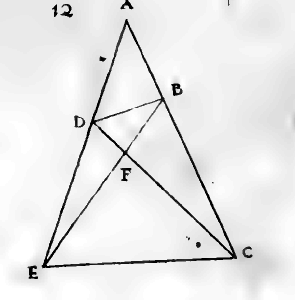

Proposition VII & Lemma IV: Pyramid Ratios and Compound Proportions¶



Proposition VII · Theorem I (pp. 10–11, Tab. 1, Fig. 12): In Element I (triangle :g:`AEC` with intersecting lines :g:`EB`, :g:`CD` meeting at :g:`F`), the ratio of segment :g:`EF` to :g:`FB` equals the ratio of the triangular pyramid (or solid) having base $\triangle AEC$ and height $CB$ to the solid having base $\triangle EFD$ and height $AB$ — equivalently, expressing the segment ratio via compounded triangle and rectangle ratios.
Ceva cites Federico Commandino's commentary on Euclid ([VI.23]) for compounding ratios of parallelograms and solids, and adds a Corollary translating the solid proportion into planar rectangles.
Lemma IV (pp. 11–12): Compound ratio permutation (ratio composita): citing Christoph Clavius (1589, Elements VIII.19), Ceva proves that if four magnitudes satisfy a compounded proportion, permuting factors preserves the compound ratio—the algebraic engine used throughout the rest of Book I to convert static weight ratios into pure Euclidean rectangles and triangles.
f. 0028 · p. 11 f. 0029 · p. 12